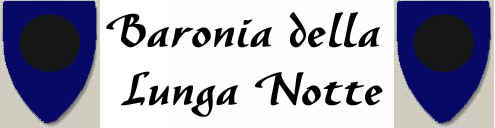
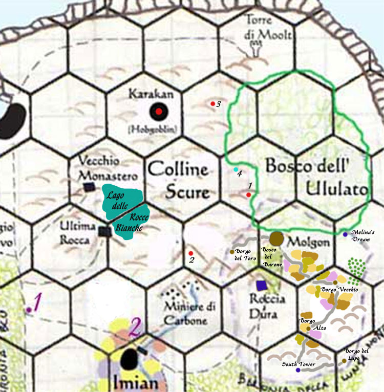

La Baronia della Lunga Notte ha un origine guerriera. Quando Ilgadon giunse con le sue truppe nella penisola di Shìnaha liberò nella cosiddetta Guerra delle Scogliere le pianure dell'odierno Granducato di Karsar dai loro abitanti. In particolare furono razziati e distrutti i numerosi villaggi degli umanoidi presenti nelle pianure e furono sottomessi gli umani che abitavano in queste zone. Costoro, chiamati gli Uomini della Notte per la loro abitudine di effettuare riti alle forze della natura solo di notte, erano ancora poco civilizzati e con una società basata di un'organizzazione di tipo tribale e sciamanico, in alcuni casi questi uomini erano soliti pregare divinità occulte e dedicarsi al cannibalismo. Date le esigue forze di cui ormai Ilgadon disponeva fu deciso di integrare questi uomini al fine di assorbirli nella popolazione del costituendo Granducato. Gli storici sono convinti che da tale unione si insinuò nella società pergariana il germoglio della malvagità, inoltre furono proprio questi selvaggi a narrare per la prima volta della presenza di semi umani dalla pelle scura che di notte cacciavano nelle foreste poi denominate Bosco dell'Ululato. La lingua parlata da questi uomini, dai forti suoni gutturali, prende il nome di Garan. La fusione dell'Argan e del Garan ha dato luogo all'odierno Gartar.
Alla fine della Guerra della Scogliere molti umanoidi si rifugiarono nelle Colline Scure e nelle foreste di Bosco Fosco, nella foresta di Ilgon e nel Bosco dell'Ululato. Per questo motivo fu deciso che Lord Krèinas, potente guerriero fedele ad Ilgadon, si stabilisse con i suoi valorosi guerrieri a sud-est delle Colline Scure. Per fondare, in quella posizione strategica al centro del Granducato una Baronia e costruire sulle Vette Centrali una roccaforte che potesse garantire la difesa della zona centrale del Granducato. Fu costruita dunque la Roccaforte di Roccia Dura dove il nuovo Barone stanziò il proprio esercito di valorosi guerrieri. Fu poi fondato il villaggio fortificato di Molgon nelle terre ad est della rocca che permettendo agli abitanti e alle famiglie dei guerrieri di stabilirsi nella zona garantisse l'approvvigionamento delle risorse alla roccaforte.
In questa zona, a ridosso delle Colline Scure e del Bosco dell'Ululato, erano presenti diversi villaggi degli Uomini della Notte. Per decisione del nuovo Barone a questi uomini furono obbligati a divenire contadini per coltivare le terre della Baronia e i loro villaggi originari furono distrutti, in alcuni casi con razzie e uccisioni di massa di coloro non volevano abbandonarli. Nella Baronia dunque la presenza di questi autoctoni fu in proporzione maggiore rispetto che in tutte le altre zone del Granducato. Le tradizioni di questi uomini non si persero del tutto, anzi si diffusero anche fra i coloni provenienti dal sud dando luogo ad una strana società ricca di superstizioni e rituali notturni. Per tale motivo, specie a causa di questi riti e cerimonie che avvenivano durante la notte, questa zona fu battezzata la Baronia della Lunga Notte.
La Baronia non rappresenta un territorio ricco, anzi è una delle aree economicamente più depresse del Granducato. Il motivo di tale arretratezza è da individuarsi nella circostanza che ancora oggi la Baronia, come nel progetto originario, ruota intorno alla Roccaforte di Roccia Dura dove si trova l'esercito della Baronia. Si tratta di un esercito relativamente numeroso (il Barone può mobilitare oltre alle truppe necessarie per la difesa della Rocca, ossia un migliaio di uomini, due armate di 1000 fanti pesanti ognuna fiore all'occhiello della fanteria pergariana) e molto prestigioso ma il cui mantenimento assorbe quasi interamente le risorse prodotte nel resto della Baronia. In poche parole l'intera economia e politica della Baronia ruota intorno alla Roccaforte di Roccia Dura. Basti pensare che lo stesso Barone vive nella roccaforte e non nel villaggio di Molgon che invece è amministrato da un rappresentante membro della famiglia del Barone.
COLLINE SCURE E BARONIA DELLA LUNGA NOTTE

DESCRIZIONE DELLE COLLINE SCURE
Le Colline Scure rappresentano una zona impervia situata al centro del territorio del Granducato. Prima della "Guerra per le Scogliere" tutto in tutto il territorio dell'odierno Granducato erano presenti comunità di umanoidi. Dopo la conquista delle truppe di Ilgadon molte di queste creature, principalmente Hobgoblin, Goblin, Gnoll, Orchetti ed Orchi si rifugiarono su queste impervie colline centrali. Il territorio roccioso quasi privo di vegetazione (sono presenti radi alberi a basso fusto e arbusti spinosi) e molto accidentato ha reso le Colline Scure una dimora eccellente per queste creature.
Nel periodo iniziale della storia del Granducato questa zona rappresentò un problema notevole per gli umani. Dalle colline, infatti, scendevano spesso piccole orde di umanoidi a razziare e depredare le pianure umane e le loro comunità. Inizialmente quindi la reazione dei Pergariani fu dura. L'esercito del Granduca da Pergar effettuava incursioni nelle colline assediando e distruggendo sistematicamente gli insediamenti umanoidi. Mentre a sud fu compito del Barone della Lunga Notte occuparsi dello stesso compito stringendo come in una tenaglia gli occupanti questi territori. Furono costruiti dunque la fortezza di Rocca Dura e il Villaggio fortificato di Molgon per garantire la sicurezza a sud. Successivamente, sia per il costo elevato di queste incursioni continue, sia per i risultati non definitivi dovuti all'estensione e alla natura impervia del territorio, la politica del Granducato nei confronti delle Colline Scure cambiò radicalmente.
Furono stretti patti con i più importanti capi umanoidi. Costoro garantirono al Granducato un controllo sulle scorribande che furono definitivamente interrotte (si verificano oggi solo piccoli raid di modesti gruppi umanoidi che sono fuori controllo e che non sono in grado di mettere in pericolo i maggiori centri di interesse del Granducato) in compenso fu garantita la loro sopravvivenza e permesso loro lo stanziamento definitivo nelle Colline Scure.
Non essendo più costretti a vivere come nomadi e fuggiaschi gli umanoidi si organizzarono (dietro controllo e consenso delle autorità pergariane) e fondarono la cittadella di Karakàn.
Con la nascita dell'Impero il territorio delle Colline Scure è divenuto un territorio soggetto ad una speciale legge imperiale che lo ha trasforma in una sorta di territorio semi-federato.
Legge Imperiale di federazione delle Colline Scure
"Il
territorio delle Colline Scure è soggetto alla presente legislazione.
Tutti i federati hanno piena libertà di movimento in tutto il territorio delle
Colline Scure. Costoro sono soggetti all'autorità riconosciuta del Lord di
Karakàn. Solo costui ha l'autorità di rilasciare permessi di autorizzazione
per consentire ai federati di lasciare il territorio delle Colline Scure.
Tutti i cittadini dell'Impero hanno libero accesso al territorio delle Colline Scure e nonostante si trovino in tale territorio dovranno continuare a rispettare la legislazione pergariana e saranno soggetti alle autorità pergariane."